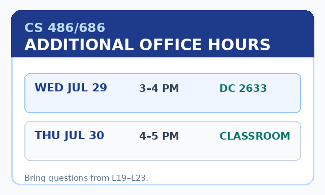
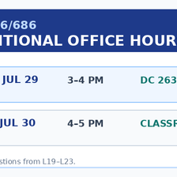

Without an image, Qwen is the LM you already know
textExplain gradient descent
→
token embeddings\([T,1024]\)
→
causal LM24 blocks
→
next tokenrepeat
L21 already explained this path. Today we change the input, not the output loop.
The exact model we will dissect
Qwen3.5-0.8B
post-trained checkpoint
Qwen/Qwen3.5-0.8B
1024LM hidden width
24language blocks
16×16image patches
textoutput modality
Qwen Team, “Qwen3.5: Towards Native Multimodal Agents,” 2026; official model configuration.
One twist: most blocks carry a recurrent state
Gated DeltaNetrecurrent-style linear attention
Gated DeltaNetrecurrent-style linear attention
Gated DeltaNetrecurrent-style linear attention
full attentionprecise token lookup
× 6= 24 blocks
Long image contexts do not pay full quadratic attention in every block.
Ask Qwen about an imagelive in browser
Choose the photo—or upload your own—then ask a visual question.
No WebGPU? Live generation may take about 20 minutes.

recorded Qwen3.5-0.8B output
Question
Is the person wearing a suit? What are they wearing?
AnswerYes, the person is wearing a suit. They are dressed in a dark suit jacket, a white collared shirt, and a dark tie.
Live path: Transformers.js v4 + WebGPU + onnx-community/Qwen3.5-0.8B-ONNX. No API key; inference stays in the browser.
The language model did not receive pixels.
What vectors did it receive?
Make the image look like language to the LLM
imagepixels
patchify16×16 regions
vision encoder768-wide features
merge + MLP1024-wide
Qwen LMreuse 24 blocks
answertext tokens
Pixels and token IDs begin in different worlds
image
[384, 640, 3]
737,280 RGB numbers
text
[2488, 374, 2201, …]
a short sequence of IDs
First compress local pixels into a sequence of patch vectors.
Qwen starts with 16×16 image patches

one patch\(16\times16\times3=768\) pixel values
one learned vectorthe patch embedding
all patchesa spatial sequence
A fixed square resize can erase small details

224×224 square
→
640×384, aspect preserved
Documents need enough retained patches for their text to survive.
“Native resolution” means a variable patch grid
preserveaspect ratio
rounddimensions to patch-compatible sizes
capthe total visual-token budget
The processor does not promise to retain every original pixel; it chooses the largest useful grid within its configured budget.
SigLIP 2 NaFlex and Qwen multimodal image preprocessing use variable grids to reduce aspect-ratio distortion.
More retained pixels create a longer visual sequence
256×25616×16 = 256 raw patches64 after 2×2 merge
512×51232×32 = 1024 raw patches256 after 2×2 merge
640×38440×24 = 960 raw patches240 after 2×2 merge
Resolution buys detail by spending context and compute.
Qwen merges each 2×2 neighborhood
\(v_1\)\(v_2\)\(v_3\)\(v_4\)
→
\([v_1;v_2;v_3;v_4]\)
four positions become one
\[
N_{\text{LM image}}=\frac{H}{16}\frac{W}{16}\frac{1}{4}
=\frac{H}{32}\frac{W}{32}
\]
How does a patch come to mean “cup” or “deadline”?
It must be trained to carry visual semantics.
Recall CLIP: put matching images and text nearby
image encoder
\(f_I(I)\) → blue point
image
text
similar vectors
“a person wearing a suit”text encoder purple point ← \(f_T(T)\)
Radford et al., “Learning Transferable Visual Models From Natural Language Supervision,” 2021. Callback to L18.
Contrastive training turns appearance into meaning
beforecolors, edges, textures
after matching textobjects, actions, concepts
Now the vision features are useful to a language model—not merely compact pixels.
Qwen’s vision tower is derived from SigLIP2
CLIPcontrastive image–text alignment
SigLIP2stronger multilingual and dense visual features
Qwen toweradapted vision encoder + Qwen merger
We use the idea and move on; the SigLIP2 training refinements are optional reading.
Tschannen et al., “SigLIP 2,” 2025; Qwen3.5 vision configuration.
The vision tower contextualizes every patch
patch embeddings
12 vision blocks
\([N,768]\) contextual features
hidden width768
attention heads12
patch size16×16
The same tower also handles video with temporal patches; today we follow one still image.
The connector changes count and width
normalize four featuresLayerNorm: \(4\times768\)
concatenate\(3072\)
MLP + GELUlearned adapter
one image embedding\(1024\)
Qwen3.5 visual merger: LayerNorm, 2×2 spatial merge, two linear layers with GELU.
Same shape means the same LLM interface
llm(inputs_embeds = concat(image_embeds, text_embeds))To the backbone, both are sequences of 1024-dimensional vectors.
The image and question become one context
<vision_start>
<vision_end>
Image spans can appear wherever the prompt places them. After embedding, every position uses the same 1024-D interface.
Once embedded, generation is unchanged
multimodal prefiximage + question embeddings
hybrid Qwen LMsame 24 blocks
next text tokenappend and repeat
Vision changes prefill; decoding still grows the text answer one token at a time.
End-to-end training teaches Qwen to use the adapter
Where are Wednesday’s office hours?
They are in DC 2633.
vision tower←connector←Qwen LM←next-token loss
Early-fusion multimodal training makes the connected system useful—not the connector shape alone.
One image, every boundary
640×384retained pixels
40×24 = 960raw patch features
20×12 = 240image embeddings
+ promptone LM prefix
“DC 2633”generated text
The recorded trace is generated from the real processor; the demo reports its actual grid for uploaded images.
The complete browser path is short
const processor = await AutoProcessor.from_pretrained(MODEL);
const model = await Qwen3_5ForConditionalGeneration
.from_pretrained(MODEL, {
device: "webgpu",
dtype: {
embed_tokens: "q4",
vision_encoder: "fp16",
decoder_model_merged: "q4",
},
});
const prompt = processor.apply_chat_template(messages, {
add_generation_prompt: true,
enable_thinking: false,
});
const inputs = await processor(prompt, [image]);
const output = await model.generate({ ...inputs, max_new_tokens: 64 });processorpatch + serialize
modelencode + adapt + reuse LM
generateemit text tokens
Adapted from the official Transformers.js Qwen3.5 WebGPU example.
Too few patches can erase the evidence
The model cannot recover visual evidence that preprocessing removed.
Qwen can see images—but it can only emit text tokens.
\([1024]\) hidden state
→
248,320 vocabulary scores
→
next text token
No image decoder. No denoiser. No pixels out.
L24: Dissecting Diffusion and World Models.